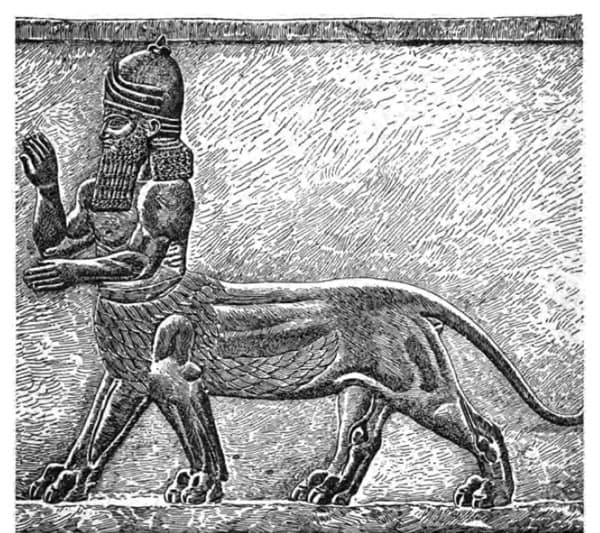
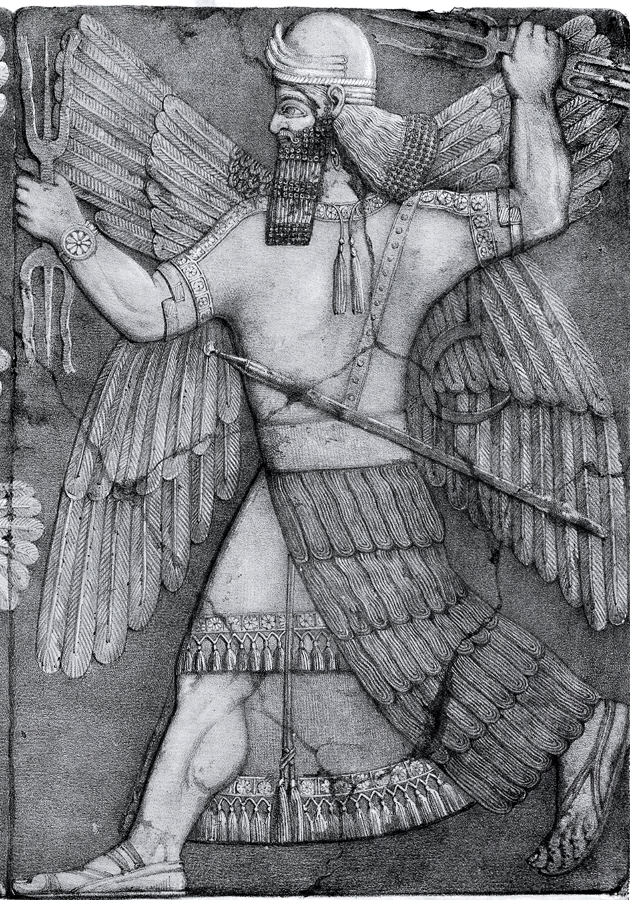
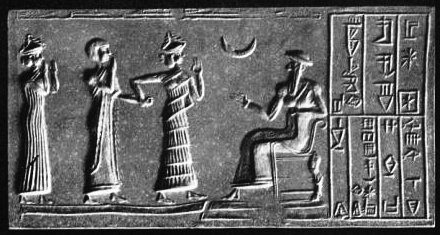
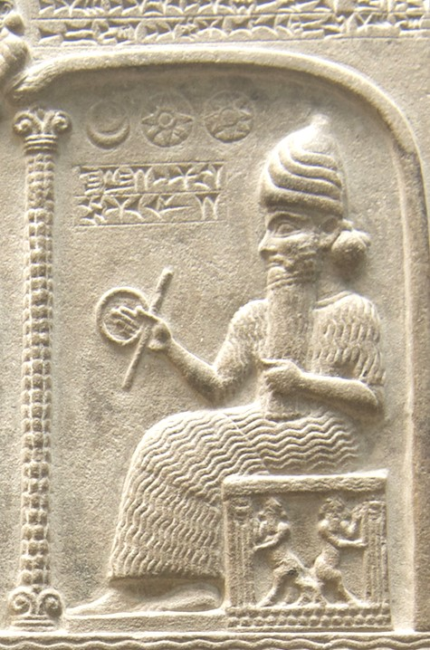
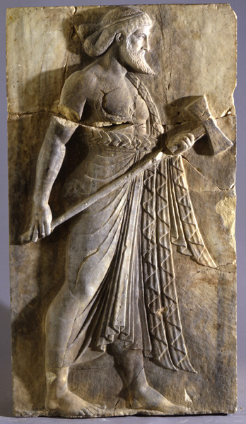
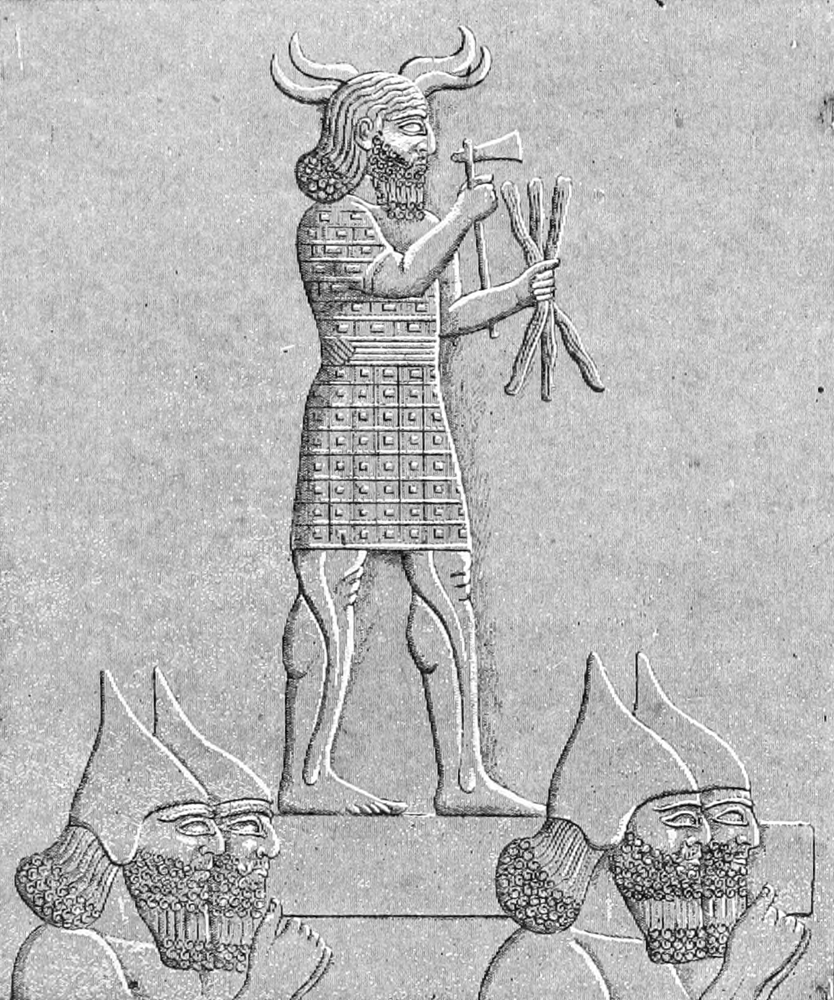

In the Sumero-Akkadian pantheon, Nergal was a secondary Mesopotamian god. He was identified with Meslamtaea and Irra as the god of war and scorched earth. He was believed to be the benefactor of humans, listening to their prayers, bringing life from death, and protecting livestock and agriculture. Ancients hymns also show him to be the god of devastation, hunger, and pestilence.

Though his main trait was aggression, he had associations with protection and healing too. His union with Gula helped him invoke magical spells to head off demons and diseases. Depicted as a courageous warrior, he held a bow and an arrow along with a mace called a sharur. In some Babylonian artworks, he is seen riding on the back of a lion with a scorpion’s tail.

His birth is related to the myth of Enlil and Ninlil where Enlil seduces Ninlil and she becomes pregnant. Ningal, “the great lady” was his wife, the sun god Utu-Shamash was his son, and Inanna, the goddess of love, was his daughter. Unusually, in the cult of Nanna, the moon was thought to be the father of the sun. This may have come about because hunter-gatherers were guided by the moon as they traveled.

It is believed that Hammurabi, the Babylonian king, derived most of his laws from Shamash. Being the sun god, he overpowered the evils of darkness, and when night took over, he was one of several judges of the underworld. He is also known as the governor of the universe and, as such, is seen seated on a throne with a staff and a ring in his hands as the symbols of righteousness and justice.

Gibil was worshiped in Mesopotamia before the beginning of the Seleucid period. As well as being the god of fire, he was also the refiner of metallic objects, and hence the patron of metalworkers. Gibil imparted wisdom about metallurgy, and many writers describe him as “the god of the forge.” He had a mind so vast that even the other gods were unable to fathom it. He was involved in purification customs and rituals as well.

This god had a two-edged aspect: he was both the giver and the destroyer. As a storm god, he destroyed life, and as a rain god, he gave life. Where hurricanes and storms were symbols of his anger towards his enemies and represented darkness and death, the rain showed his happiness. With this rain, the land bore grain and people were able to feed themselves, so he was also called the god of abundance. The god of heaven, Anu, was his father, and Shalash was his consort. However, some scripts say that he was the son of the god of all lands, Bel.
